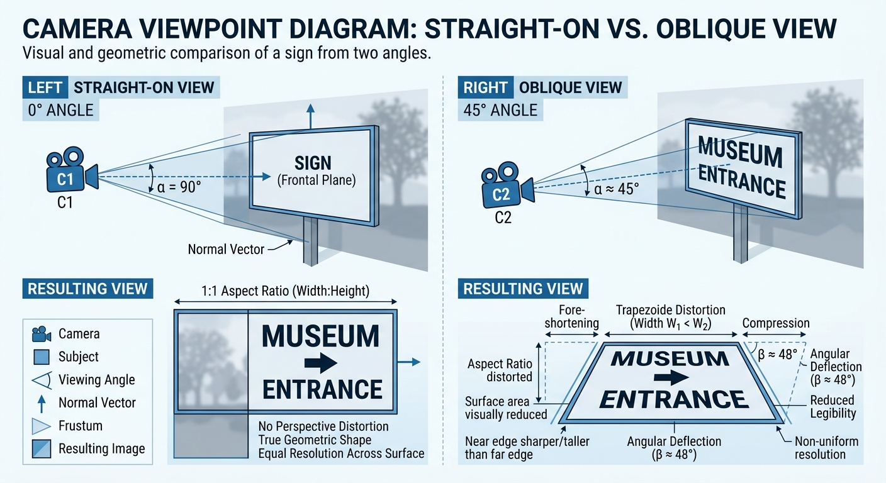
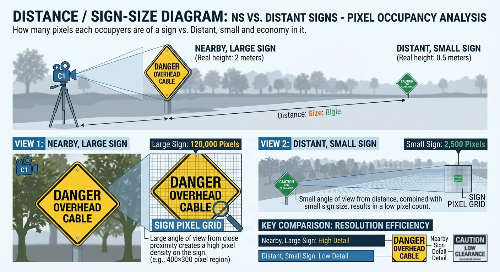
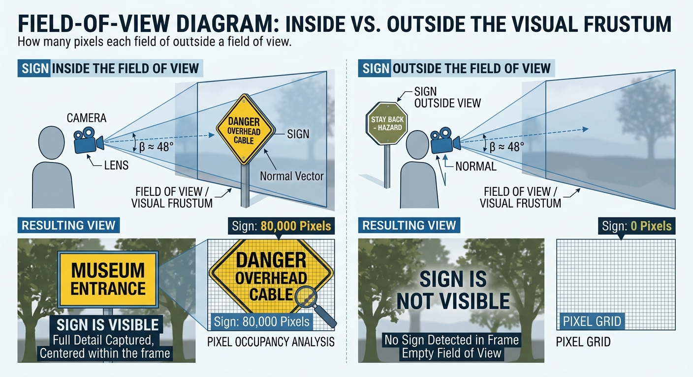
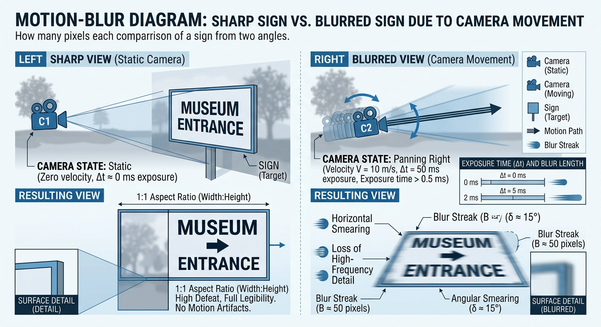
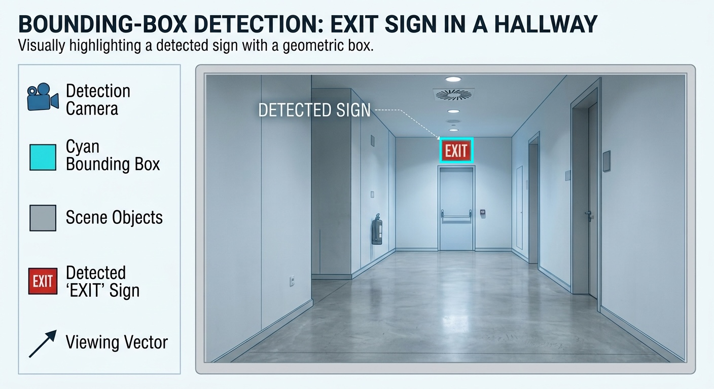

LISTEN TO THIS PAGE
Mobile Cameras and Sign Detection
Listen to how camera viewpoint, distance, field of view, movement, and lighting can affect sign detection.
CS 663 — Computer Vision
Mobile Cameras and Sign Detection
How the camera's viewpoint, distance, movement, and field of view affect the ability to find signs.
Why Does the Camera Matter?
A sign detection system depends on the images captured by the camera. If the sign is not clearly visible in the image, the computer vision system has less information to work with.
A smartphone camera can be used while a person is walking through an environment. This means that the camera is constantly changing position and direction instead of staying in one fixed location. Because of this, the same sign can look very different from one camera frame to another.
Previous research on mobile sign detection has specifically examined how signs can be detected and localized using smartphone cameras. [1]
Camera Viewpoint
The viewpoint of the camera affects how a sign appears in an image. A sign facing the camera directly may have a clear rectangular shape, while a sign viewed from the side can appear narrower or distorted because of perspective. If the angle becomes more extreme, less of the sign may be visible.

These changes in viewpoint can make sign detection more difficult because the same sign may look different depending on the camera's position. Research on object detection under different viewpoints has also examined how changes in visibility and viewpoint affect detection. [6]
Front View
The camera is facing the sign directly. Most of the sign surface is visible.
Angled View
The camera is viewing the sign from the side. The sign can appear distorted or partially hidden.
Distance and Sign Size
The distance between the camera and the sign also affects detection. As the camera moves farther away, the sign occupies fewer pixels in the image. A large sign close to the camera may contain many visual details, while the same sign far away may only appear as a small object.

Why is a small sign difficult?
Small and distant signs are a major challenge in real-world sign detection. When a sign occupies only a small area of an image, there are fewer pixels available to describe its shape, color, and other visual features. This can make it harder for a detection model to distinguish the sign from the background. Research on traffic sign detection has specifically studied small and partially occluded signs because of these challenges. [3]
Field of View
The camera's field of view determines how much of the surrounding environment can be captured in an image at one time. Unlike a person who can look around a large environment while walking, a camera only captures the area within its current view. A sign outside the camera's view cannot be detected until the camera points toward it.

This is especially important for accessibility applications because a system may work correctly when a sign is directly in front of the camera but miss it when the sign is outside the current view. James Coughlan also identified the difference between human vision and a smartphone camera's field of view as an important challenge for mobile sign recognition. [8]
Camera Movement and Motion Blur
A mobile camera may move as the person walks. Fast movement can cause motion blur, which makes objects appear less sharp in the captured image.

Motion blur can become an even bigger problem in darker environments because the camera may need a longer exposure to capture enough light.
James Coughlan, one of the researchers whose work is discussed in this tutorial, also identified camera movement, motion blur, and small or distant signs as important challenges for real-time sign recognition. [8]
How Does a Computer Vision System Find a Sign?
Before a system can read a sign, it first needs to determine whether a sign is present in the camera image. This is the detection part of the process.
A computer vision system can examine an image or video frame and look for visual patterns that indicate the presence of a sign. Depending on the approach, these patterns can include color, shape, edges, texture, or features learned by a deep-learning model.
Earlier approaches used image-processing techniques and hand-designed features to locate signs. More recent systems can use deep-learning object detectors that learn visual features from training images. For example, YOLO-based systems have been used for real-time sign detection with smartphone cameras. [1]
The basic process can be thought of as:
1. Capture
The mobile camera captures an image or video frame.
2. Detect
The computer vision system looks for signs in the image.
3. Locate
The system identifies where the sign is located.
4. Identify
The system can determine what type of sign was detected.
Once a sign has been detected, OCR can be used as a later step to read text on the sign.
Sign Localization and Bounding Boxes
Detecting that a sign exists is only part of the problem. A computer vision system also needs to determine where the sign is located in the image. This is called localization.
Object detection systems commonly use a bounding box. The box surrounds the to represent the location of an object. The box surrounds the detected object and shows its approximate position and size in the image.
For example, if a camera sees an EXIT sign on a wall, the detection model can draw a box around the sign. The system can then use the location and size of that box for additional processing.

In the iNavigate research, sign detection was combined with localization and other information such as the estimated distance and orientation of a sign. [1] Other traffic-sign detection systems also use bounding boxes to identify where signs appear in larger street scenes. [4]
Why is localization useful?
Once a sign has been located, the system can focus on that part of the image instead of processing the entire scene. The location can also help estimate where the sign is relative to the user and determine what should be analyzed next.
Researcher Perspective
In an email response for this tutorial, James Coughlan explained that moving cameras can make it difficult to detect and read signs that are far away or contain small text. He also pointed out that camera movement can create motion blur, especially in dark environments.
He also noted that smartphones generally have a narrower field of view than human vision. This can limit the camera's ability to notice signs that a person might otherwise see around them.
Coughlan also described another problem: a camera may capture many signs and pieces of text at once, but the system still needs to determine which information is useful to the user. [8]
Putting the Camera Challenges Together
A mobile sign detection system has to deal with several camera conditions at the same time.
📷 Viewpoint
The camera may see the sign from the front, side, above, or below.
📏 Distance
Signs may be large nearby objects or very small distant objects.
👀 Field of View
The camera can only analyze what is currently inside its field of view.
🚶 Movement
Walking and camera movement can introduce blur and changing viewpoints.
💡 Lighting
Bright, dark, or changing lighting can affect the appearance of signs.
🏙️ Environment
Other objects and text can make it difficult to separate signs from the background.
What Comes Next?
Now that we understand how mobile cameras capture signs and why viewpoint, distance, movement, and other camera conditions matter, the next section looks at the computer vision techniques researchers use to detect signs.
Next: Detection Techniques →